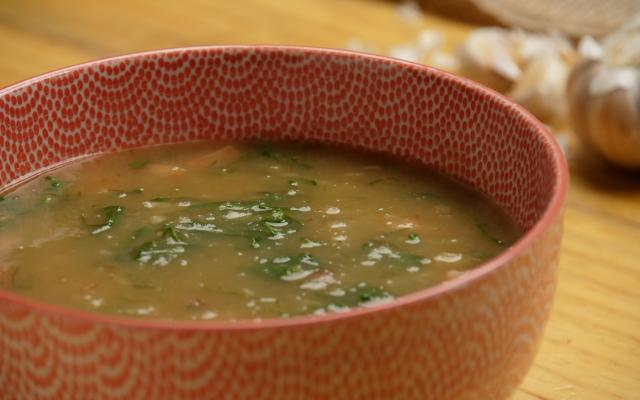

Caldo verde

Descricao
O caldo verde é uma sopa deliciosa que combina linguiça, bacon, batata, couve e tempero, muito popular na região Sudeste.
Ingredientes
- 1kg de batata
- 250gr de bacon
- 2 cubos de caldo de bacon
- 4 dentes de alho
- 1 porcao de couve (cortado bem fininho)
- 1/2kg de calabresa defumada
- 3 colheres de sopa de oleo
- 1 cebola pequena
- 1 molho de coentro
- 1 colhe de cha de pimenta-do-reino
- sal a gosto
Modo de preparo
- Descasque as batatas e leve para cozinhar.
- Corte em cubinhos a calabresa e o bacon.
- Pique todos os temperos (separadamente).
- Frite a calabresa (reserve).
- Frite o bacon (reserve).
- Quando as batatas estiverem cozidas, bata com água no liquidificador até formar um caldo grosso (reserve).
- Aqueça o óleo, frite a cebola, acrescente o alho, logo após os cubinhos de bacon e a pimenta cominho.
- Despeje o caldo batido (batata) na panela do recheio e acrescente a calabresa e o bacon (fritos).
- Mexa o caldo para não grudar na panela.
- Quando ferver acrescente o sal (a gosto), o coentro e o couve.
- Sirva com vinagrete, torradas e patê.
Home